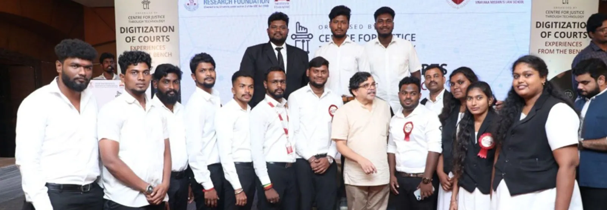

Technology has become the backbone of this century. With globalization and an ever expanding usage of technology, the ambit of legal application in many allied areas has become necessary. With this evolution, law is bound to wrap and adapt to the needs of the modern society. This need has left us experimenting with technological solutions, to provide access to justice for all. A number of such products which have improved processes have been launched and incubated by incubators housed in various law firms across the globe.
This change has effectively started after the SDG 16 focus was emphasized by the UN Secretariat recently. These visions and goals have fostered development of marginalized communities. The use of technology in legal systems has made them more efficient and responsive. One cannot imagine the future legal world elusive of technology. Therefore, in today’s rapidly evolving world, it is fundamental to equip students with the skills to navigate through the landscape of emerging technologies, leveraging them to address multifaceted challenges within our justice system. This encompasses not only access to courts, but also to the larger system of legal literacy, awareness and access to constitutionally guaranteed rights, interaction with local government, rights as citizens, professionals, and entrepreneurs, all within the framework of justice – social, economic, and political.

The Centre for Justice through Technology (CJT), at Vinayaka Mission’s Law School (VMLS), was created with the objective of providing scholastic perspectives and offering up practical contributions to this new era of adjudication and lawyering. Be it evaluation of potential technology pathways for resolution of long-standing problems in the world of law and justice, policy recommendations for responsible and user-friendly deployment of technology, or engagement with the myriad new ways in which emerging technologies shall interact with law and policy, the Centre aims to take the lead in these areas and emerge as a pioneering voice for shaping thought and action.
With this objective in mind, the inaugural CJT lecture, delivered by the Honorable Justice Muralidhar, focused on the digital transformation of courts. Justice Muralidhar’s lecture was an intellectual exploration into how contemporary technology is reshaping the legal system, while equally providing practical perspectives on solving one particular problem that had ailed the Indian judiciary for long – resort to excessive paper and poor record keeping and retrieval system dependent on manual tasks. Keeping this evolving paradigm shift in mind, the key stakeholders in this process who are lawyers need to be sensitized, equipped and trained to better their practice.